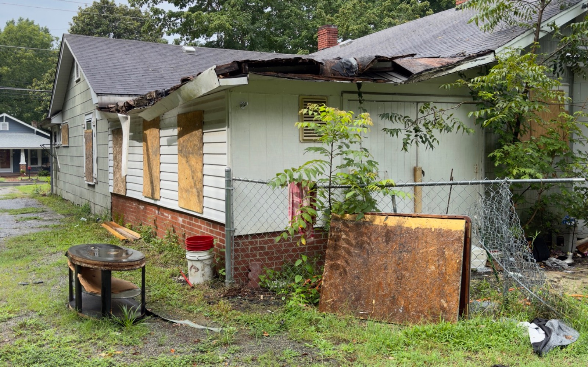
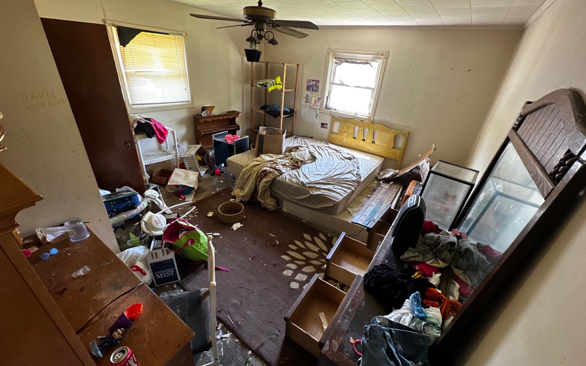
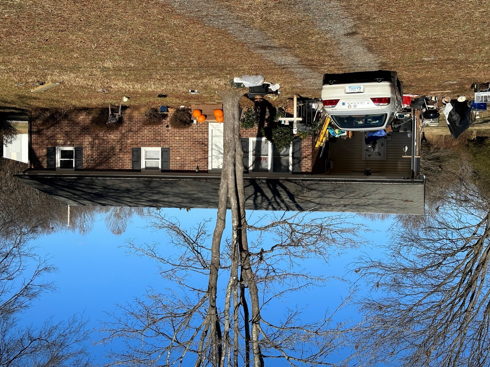

Exterior condition
Deferred maintenance outside.
Exterior damage, neglected landscaping, siding issues, and cleanup can make a property difficult to prepare for traditional showings. We can account for that work in an as-is review.
Real work, not stock photography
These photographs show the kinds of exterior repairs, interior renovation, debris removal, cleanout, and hands-on work America Home Buyers evaluates. Seller details and exact addresses are kept private.

Exterior condition
Exterior damage, neglected landscaping, siding issues, and cleanup can make a property difficult to prepare for traditional showings. We can account for that work in an as-is review.

Interior renovation
Kitchen removal, damaged finishes, flooring, drywall, electrical updates, and plumbing work can quickly turn a sale into a construction project.

Cleanout
Inherited and long-vacant properties sometimes include furniture, personal property, and debris. Tell us what remains so it can be considered before an offer.

Debris removal
Yard debris, discarded materials, and unfinished projects do not automatically disqualify a property from a direct offer.
Hands-on work
The reason an as-is offer can simplify a sale is that the repair planning, labor, materials, and risk move to the buyer after closing.

Whole-property review
An offer may need to account for the roof, systems, interior, exterior, cleanout, holding time, and resale uncertainty together.
Your house can look like a project
You can compare the as-is option before hiring contractors or clearing out the property.